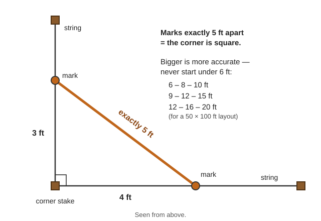
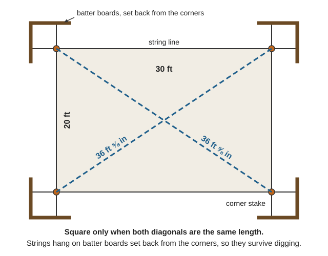
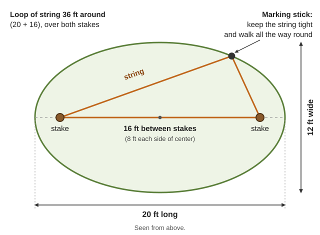
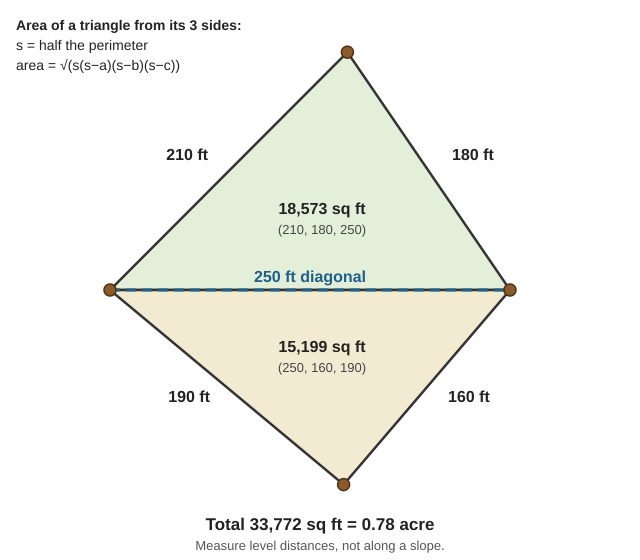
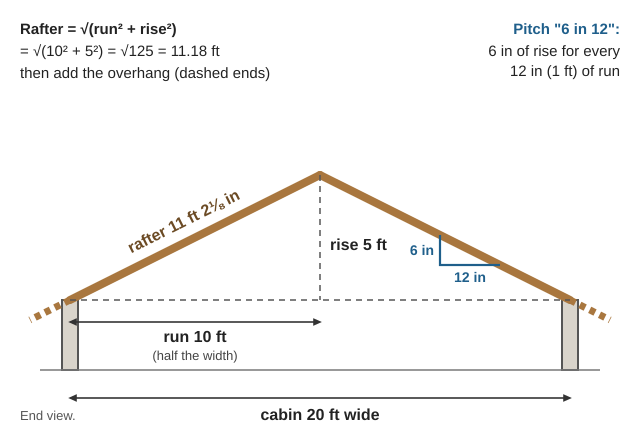
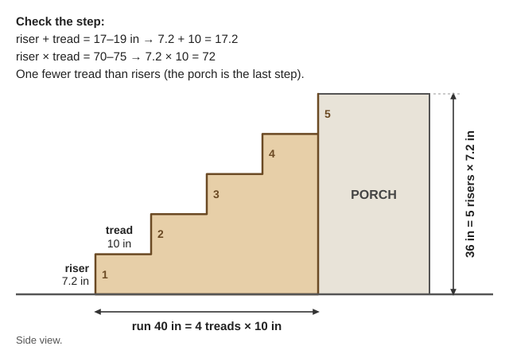
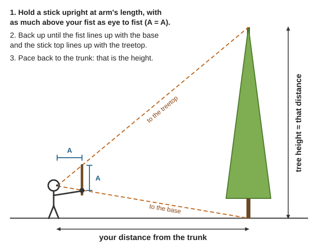
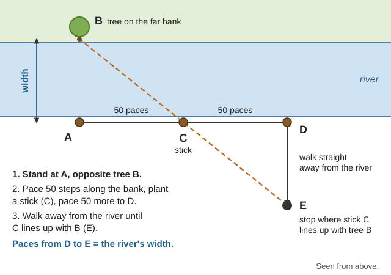

Guides › Making & repair · Emergency · Index A–Z
Homestead math with no stores: measuring with your body and a string, mixing by ratio, squaring a foundation, areas, tanks, woodpiles and loads, slopes and heights you can't reach, and the numbers behind water, power and medicine — each with a worked Illinois Valley example. The books are in Math-Measuring\Arithmetic-Geometry (Navy Mathematics courses), Math-Measuring\Measuring-Surveying (USDA surveying, quantities, timber measuring) and Math-Measuring\Units-Tables (NIST unit tables, Army Engineer Field Data); Ray's arithmetic is in Children-Learning\Arithmetic, and FM 5-426 Carpentry and FM 5-125 Rigging in Manuals\ArmyFieldManuals. The interactive 🔢 Unit converter & calculators page (Unit converter) does the arithmetic, the 🧮 Calculator (basic and scientific) handles any other sum, and this guide shows how to do it with a pencil.
⚠️ Rules that prevent the worst mistakes
- Same units before you multiply. Turn everything into feet (or inches) first. Mixing inches and feet is the commonest error — off by 12, 144 or 1,728 times.
- A British or Canadian "gallon" is about 20% bigger than a US gallon (NIST HB 44, p. 8). Check where a recipe or manual came from.
- Medicine: only doses printed in the medical books, in mg and mL, never drops. A second person redoes the arithmetic before anyone swallows it.
- Loads are heavier than they look. A cubic yard of damp packed earth weighs about 2,600 lb (FM 5-34, p. 292). Never stand under a lift.
- Measure twice, check a second way, and round the safe way: more posts, a bigger pipe, a smaller dose.
Your body is a ruler — measure yours once (rule of thumb):
| Measure | What it is | Typical adult |
|---|---|---|
| Thumb width | Across the knuckle | about 1 in |
| Span | Thumb tip to little-finger tip, spread | 8–9 in |
| Cubit | Elbow to fingertip | 17–19 in |
| Arm spread | Fingertip to fingertip | about your height |
| Pace | One step | 2–2½ ft |
Pace count (NRCS Surveying, p. 33): walk a measured 500 ft until the count varies by no more than 2–3 paces. Pace factor = distance ÷ paces; pacing is good to about 2%. Example: 500 ft in 200 paces = 2.5 ft per pace, so 340 paces along a fence is 850 ft. The Army counts every step, the Forest Service every second step — pick one (FM 3-25.26, p. 52; Navigation guide). Hills and brush add steps; count with pace count beads.
Known sizes (standard sizes): a dollar bill is 6.14 in long; a "2×4" is 1½ × 3½ in; letter paper 8½ × 11 in. A string knotted every foot is a tape.
Level, plumb and straight:
Equal parts (Navy Mathematics Vol. 1, p. 197): for 5 equal strips, slant a ruler so 0 and 10 in touch the board's edges and mark at 2, 4, 6 and 8.
📚 Go deeper: NRCS Surveying, pp. 32–34 — pacing and taping on slopes; Navy Vol. 1, ch. 6 — percentage and measurement; Tape measure.
Percent = part ÷ whole × 100: 15 sick hens of 60 is 25% (Navy Vol. 1, pp. 62–64).
Scaling a recipe: factor = amount wanted ÷ amount the recipe makes. Bread for 6 loaves, wanted 10: 10 ÷ 6 = 1⅔, so 3 cups of water becomes 5. Scale every ingredient (ratio and proportion, p. 148).
Mixing by parts — add the parts; each part is the batch ÷ that total. All by volume, same bucket:
| Mix | Parts | Source |
|---|---|---|
| 2-stroke fuel | Ratio on the engine; most modern saws 50:1 = 2.6 oz oil per gallon (40:1 = 3.2 oz; 32:1 = 4 oz) | MAVCC, p. 186; (rule of thumb) |
| Concrete toilet slab | 1 cement : 2 gravel : 3 sand + water till it holds together | Hesperian ch. 7, p. 20 |
| Chimney mortar | 1 portland cement : 1 lime : 6 sand | FB 1751, p. 24 |
Example: 3 cu ft of that concrete is 6 parts: ½ cu ft cement, 1 gravel, 1½ sand.
Dilution: C1 × V1 = C2 × V2 (strength × amount before = strength × amount after). 1 gallon of 0.2% chlorine from 6% bleach: V1 = 0.2 × 1 ÷ 6 = 1/30 gallon = 8½ Tbsp, about ½ cup, topped up to 1 gallon with water — the same as the Sanitation guide's table and the MSF rule parts of water = (bleach % ÷ % wanted) − 1 (MSF Cholera, p. 226). Never mix bleach with ammonia or vinegar.
📚 Go deeper: Ray's Practical Arithmetic — fractions to percentage, with hundreds of problems; Answers for parents; Navy Vol. 1, chs. 4–6.
The 3-4-5 triangle (Pythagorean theorem): from the corner, mark 3 ft along one string and 4 ft along the other; when the marks are exactly 5 ft apart, the corner is square (Navy Vol. 1, p. 199). Multiples work — 6-8-10, 9-12-15, 12-16-20 — and bigger is more accurate: never start under 6 ft; use 12-16-20 for a 50 × 100 ft layout (FM 5-426, p. 48).

Marks 3 ft and 4 ft out from the corner stake, exactly 5 ft apart: the corner is square (a diagram drawn for this guide).Check the diagonals: a rectangle is square only when both diagonals are equal (same page). For a 20 × 30 ft shed, √(400 + 900) = 36.06 ft (36 ft ⅝ in) each. Hang the lines on batter boards set back from the corners so they survive digging (FM 5-426, p. 46).

The 20 × 30 ft shed: both diagonals 36 ft ⅝ in, and the strings hung on batter boards clear of the digging (a diagram drawn for this guide).With a string and stakes (a rope compass):

Stakes 16 ft apart, a 36-ft loop of string and a stick kept tight inside the loop draw the 20 × 12 ft oval (a diagram drawn for this guide).📚 Go deeper: Navy Vol. 1, ch. 18 — constructions; FM 5-426, pp. 44–48 — layout tools, batter boards, squaring; Steel square.
| Shape | Area | Example |
|---|---|---|
| Rectangle | length × width | 60 × 40 ft garden = 2,400 sq ft |
| Triangle | ½ × base × height | base 30, height 20 ft = 300 sq ft |
| Circle | π × r² (π ≈ 3.14) | 10-ft radius = 314 sq ft |
| Trapezoid | ½ × (a + b) × height | parallel sides 120 and 80 ft, 60 ft apart = 6,000 sq ft |
| Triangle, three sides known | √(s(s−a)(s−b)(s−c)), s = half the perimeter | below |
(Navy Vol. 1, pp. 191–196; NRCS Quantity Computations, p. 15; Heron's formula)
Irregular plot: split it into triangles and measure all three sides of each — no angles needed. A pasture with sides 210, 180, 160 and 190 ft and a 250-ft diagonal gives triangles (210, 180, 250) and (250, 160, 190): 18,573 + 15,199 = 33,772 sq ft = 0.78 acre. Measure level distance; a tape laid on a hillside reads long (NRCS Quantity Computations, p. 14).

The pasture example: one diagonal makes two triangles; measure all five lines and add the two areas (a diagram drawn for this guide).Acres: 1 acre = 43,560 sq ft (NIST HB 44, p. 25), a square 208.7 ft on a side (p. 13). Old deeds use the rod (16½ ft) and chain (66 ft) (pp. 24–25); 10 square chains = 1 acre.
Fences: posts on a straight run = length ÷ spacing + 1; on a closed loop = perimeter ÷ spacing. A 1-acre square is 835 ft around: posts every 10 ft = 84.
Roofs: roof area = flat (plan) area × the slope factor (table in the slope section). Roofing is sold by the square = 100 sq ft (Ray's, p. 330). A 30 × 20 ft cabin with 1-ft overhangs is 32 × 22 = 704 sq ft flat × 1.118 (6-in-12) = 787 sq ft, 7.9 squares; add about 10% for waste (rule of thumb) → 9 squares.
Paint and plaster: wall area (perimeter × height, minus openings) ÷ what one batch actually covered on a test patch. Plaster volume = area × thickness: 400 sq ft at ½ in = 16.7 cu ft.
📚 Go deeper: NRCS Quantity Computations, pp. 14–16 — areas by triangles and coordinates; Ray's, pp. 318–331 — mensuration for the old trades.
Key numbers: 1 cu ft = 1,728 cu in = 7.48 gallons; 1 gallon = 231 cu in; 1 cu yd = 27 cu ft (Navy Vol. 1, p. 227; NIST HB 44, p. 27). Water weighs 62.4 lb per cu ft (DOE Microhydropower, p. 113), so 62.4 ÷ 7.48 = 8.34 lb per gallon: a 5-gallon bucket is 42 lb, a full 55-gallon drum about 460 lb.
| Shape | Volume | Example |
|---|---|---|
| Box | length × width × depth | slab 10 × 12 ft × 4 in = 40 cu ft = 1.48 cu yd |
| Cylinder (tank, well, barrel) | π × r² × height | tank 8 ft across, 6 ft of water: π × 16 × 6 = 301.6 cu ft × 7.48 = 2,256 gal |
| Cone (gravel, grain, sawdust pile) | π × r² × height ÷ 3 | sawdust pile 10 ft across, 4 ft high = 105 cu ft ≈ 3.9 cu yd |
(NRCS Quantity Computations, p. 17; cone, Navy Vol. 1, p. 203; all shapes, FM 5-34, p. 300)
Well casing: gallons per foot of water = 0.0408 × (inside diameter in inches)²: 4-in 0.65, 6-in 1.5, 8-in 2.6 (OHA bulletin, p. 2). A 6-in well with 120 ft of water (well depth − static water level, same page) holds about 180 gallons (Wells guide).
Horizontal tank, partly full (computed): depth ÷ diameter → percent of full capacity:
| Depth ÷ diameter | 0.1 | 0.2 | 0.25 | 0.3 | 0.4 | 0.5 | 0.6 | 0.7 | 0.75 | 0.8 | 0.9 |
|---|---|---|---|---|---|---|---|---|---|---|---|
| % full | 5 | 14 | 20 | 25 | 37 | 50 | 63 | 75 | 80 | 86 | 95 |
Grain: 1 bushel = 2,150.42 cu in = 1.244 cu ft (HB 44, p. 17), so bushels ≈ cu ft × 0.8 (Ray's: cubic inches ÷ 2,150.4, p. 332). A bin 10 ft across, filled 8 ft deep: 3.14 × 25 × 8 = 628 cu ft → about 505 bushels.
Firewood and lumber:
Concrete, cob and earth:
Rain catchment: 0.62 gallons per sq ft of roof per inch of rain (Texas Rainwater, p. 34); real systems catch about 85% (p. 43). Only 5–7 in falls April–September here (Josephine County Soil Survey, p. 5): a 1,500-sq-ft roof catches 6 × 1,500 × 0.62 × 0.85 ≈ 4,700 gallons all summer — store winter water. Cave Junction's record day, 8.12 in (same page), sheds about 7,500 gallons off it — size the overflow. Watering: 1 inch on 1,000 sq ft = 623 gallons.
📚 Go deeper: NRCS Quantity Computations, pp. 17–20 — prisms, cones, cut and fill; FB 1210 — log rules and cord tables; Rainwater harvesting.
Three ways to say "how steep":
| Roof pitch | 3 in 12 | 4 in 12 | 6 in 12 | 8 in 12 | 9 in 12 | 12 in 12 |
|---|---|---|---|---|---|---|
| Percent | 25% | 33% | 50% | 67% | 75% | 100% |
| Degrees | 14° | 18.4° | 26.6° | 33.7° | 36.9° | 45° |
| Slope factor (rafter ÷ run) | 1.031 | 1.054 | 1.118 | 1.202 | 1.250 | 1.414 |
(computed: factor = √(144 + rise²) ÷ 12)
Rafter length (Pythagoras): run = half the building's width. A 20-ft-wide cabin at 6 in 12: run 10 ft, rise 5 ft, rafter = √(100 + 25) = 11.18 ft = 11 ft 2⅛ in, plus overhang. A square's rafter table agrees (FM 5-426, pp. 107–110).

Half the width is the run; at 6 in 12 the rise is half the run, and the rafter is the long side (a diagram drawn for this guide).Stairs: riser + tread = 17–19 in and riser × tread = 70–75; one fewer tread than risers (FM 5-426, p. 102). A porch 36 in high: 5 risers of 7.2 in and 4 treads of 10 in (sum 17.2, product 72) → 40 in of run.

The 36-in porch: 5 risers of 7.2 in and 4 treads of 10 in; the porch floor is the top step (a diagram drawn for this guide).Fall on pipes and ditches (inches per foot × 8.33 = percent):
| Use | Slope | Source |
|---|---|---|
| Gutter | 1 in per 10 ft (0.8%) | Wood-Frame House, p. 169 |
| Creek intake channel or pipe | about 1% | Hydrams, p. 209 |
| House drain | ¼ in per ft (2%) | (rule of thumb) |
| Shelter trench floor | ½ in per ft (4%) or more | ORNL Expedient Shelter, p. 81 |
A 60-ft drain at ¼ in per ft drops 15 in — check the outlet first.
Measuring a slope:
📚 Go deeper: FM 3-25.26, pp. 112–115 — percent, degrees, gradient; FM 5-426, pp. 106–110 — laying out rafters; NRCS Surveying, p. 40 — height from percent slope; Stairs.
Shadows (similar triangles): height = your height × tree's shadow ÷ your shadow, at the same moment (Navy Vol. 1, p. 207). You: 6 ft, 4½-ft shadow; the fir's shadow 48 ft → 6 × 48 ÷ 4.5 = 64 ft.
Stick (45°) method (similar triangles): hold a stick upright at arm's length with as much above your fist as from your eye to your fist. Back up until the fist lines up with the base and the stick top with the treetop: your distance from the trunk ≈ the height. A cruiser's stick does the same with printed marks (FB 1210, p. 14; Biltmore stick).

Stick above the fist as long as eye to fist: where both ends line up, your distance from the trunk is about the tree's height (a diagram drawn for this guide).Abney or clinometer (percent): height = level distance × (top % − base %) ÷ 100, base negative if below your eye. At 66 ft, top +110%, base −8%: 66 × 1.18 = 78 ft. Felling: see the Firewood guide.
Width of a river:

Triangles A-B-C and D-E-C are the same shape and size, so D to E equals the river's width (a diagram drawn for this guide).Thumb jump (rule of thumb): thumb at arm's length, close one eye then the other; it "jumps" along the far hillside. Judge the jump from a known width (a 60-ft barn) and multiply by 10 — arm's length is about ten times the space between your eyes. Check yours on a paced distance.
Maps: ground distance = map distance × the scale's bottom number (FM 3-25.26, p. 44): on a 1:24,000 map, 1 in = 2,000 ft. The contour interval is in the margin (p. 17): with a 40-ft interval, lines ¼ in apart = 40 ÷ 500 = 8% (p. 113). More in the Navigation guide.
📚 Go deeper: Navy Vol. 1, ch. 19 — right triangles, with sine and tangent tables at p. 220; Navy Vol. 2, ch. 5 — solving any triangle; FB 1210, pp. 8–14 — measuring standing trees.
Lever: push × your side of the pivot = load × load side. The mechanical advantage is how many times it multiplies your push — 10 lb lifting 100 lb is 10 (FM 5-125, p. 105). A 6-ft bar with the pivot 6 in from the load: 5½ ÷ ½ = 11, so a 100-lb push lifts about 1,100 lb.
Block and tackle: count the rope lines holding the moving block — that's the advantage (FM 5-125, p. 110; p. 112). Each sheave adds friction of about 10% of the load (p. 114); pull = (load + friction) ÷ advantage (p. 115). A 600-lb engine on 4 lines over 4 sheaves: (600 + 240) ÷ 4 = 210 lb. A person pulls about 100 lb straight down, 60 lb along the ground (same page): put three on it.
Ramps (physics; friction adds more): push ≈ weight × height ÷ ramp length: a 500-lb log up a 12-ft skid onto a 3-ft wagon bed takes 125 lb plus friction (Bicycles & Carts guide).
Rope: safe load = breaking strength ÷ at least 4; knots, sharp bends and age cut strength up to 50%. Fiber rope rule: safe tons = diameter in inches squared — ½-in rope = ¼ ton (FM 5-125, p. 20).
Weights for guessing loads (lb per cu ft, FM 5-34, pp. 291–292):
| Material | lb/cu ft | Material | lb/cu ft |
|---|---|---|---|
| Water / ice | 62.4 / 56 | Seasoned softwood / medium / hardwood | 25 / 40 / 55 |
| Earth, dry loose / damp packed | 76 / 96 | Hay and straw bales | 20 |
| Sand and gravel, wet | 118–120 | Common brick | 120 |
| Concrete | 144 | Gasoline / diesel | 42 / 53 |
Green wood is far heavier (Firewood guide). Diesel is heavier than gasoline: about 7.1 lb per gallon × 7.48 = 53 lb per cu ft (computed), so a full 55-gallon drum of diesel is about 390 lb.
📚 Go deeper: FM 5-125, pp. 105–120 — blocks, tackle, hoists, winches; Navy Vol. 2, ch. 7 — forces in balance; Mechanical advantage.
📚 Go deeper: NEETS Module 1, ch. 3 — Ohm's law, power and energy with practice questions; Off-Grid Power guide — load lists and battery sizing.
📚 Go deeper: USDA FB 1448, pp. 27–28 — pressure and suction tables; NRCan, pp. 41–44 — measuring head and flow; Micro hydro.
A year's food: people × calories a day × days, at 2,100 kcal per person a day and about 1,500 kcal per pound of dry grain (Food Security guide): 4 × 2,100 × 365 = 3,066,000 kcal ≈ 2,000 lb of grain-equivalent for a family of 4. Days of supply = stock ÷ daily use: 50 lb of flour at 1½ lb a day = 33 days.
⚠️ Medicine arithmetic — read this first
- Use only doses printed in the medical books (Medical guide; WTND green pages). This is arithmetic only.
- Write the unit on every number — mg, mL, kg. Mixing mg and mL, or lb and kg, kills.
- A second person redoes it without seeing yours. If the answers differ, stop.
- Never measure medicine in drops or with unchecked kitchen spoons.
Dose by weight (mg/kg): kg = lb ÷ 2.2 (WTND ch. 8, p. 4); mg = mg per kg × kg. Made-up numbers, not a real dose for any medicine: 10 mg/kg for a 44-lb child: 44 ÷ 2.2 = 20 kg; 20 × 10 = 200 mg; from a liquid with 100 mg in 5 mL: 200 ÷ 100 × 5 = 10 mL. Dosing an overweight child by actual weight can give far too much (WHO Formulary, p. 15).
Spoons: 1 tsp = 5 mL, 1 Tbsp = 15 mL. Household spoons vary — mark one at exactly 5 mL of water from a syringe (WTND ch. 8, p. 3). Drops are unreliable: two books here put 64 (USU, p. 20) and 75 (Henley's, p. 706) drops in a teaspoon, before the dropper or liquid changes.
Time: "every 8 hours" = 3 times a day; "every 6 hours" = 4.
📚 Go deeper: WTND ch. 8 — grams, milligrams, spoons, child doses; Food and Nutrition Needs in Emergencies — adjusting calories; Field Care guide.
From NIST HB 44, pp. 17–28 (US units), NIST SP 811, pp. 57–68 (metric factors) and Navy Vol. 1, p. 227.
| Length | Area | ||
|---|---|---|---|
| 1 in | 2.54 cm (exact) | 1 sq ft | 144 sq in |
| 1 ft | 12 in = 0.3048 m | 1 sq yd | 9 sq ft |
| 1 rod | 16½ ft | 1 acre | 43,560 sq ft = 0.405 ha |
| 1 chain | 66 ft = 4 rods | 1 hectare | 2.471 acres |
| 1 mile | 5,280 ft = 1.609 km | 1 sq mile | 640 acres |
| 1 m | 3.281 ft = 39.37 in |
| Volume | Kitchen | ||
|---|---|---|---|
| 1 cu ft | 1,728 cu in = 7.48 gal | 3 tsp | 1 Tbsp (15 mL) |
| 1 cu yd | 27 cu ft | 16 Tbsp | 1 cup (8 fl oz, 237 mL) |
| 1 US gallon | 4 qt = 128 fl oz = 3.785 L | 2 cups | 1 pint |
| 1 liter | 1.057 qt | 1 tsp | 5 mL |
| 1 bushel | 4 pecks = 1.244 cu ft | 1 Imperial gallon | 1.2 US gallons |
| 1 cord | 128 cu ft | 1 acre-foot | 43,560 cu ft |
| Weight | Pressure and energy | ||
|---|---|---|---|
| 1 lb | 16 oz = 0.4536 kg | 1 ft of water | 0.433 psi |
| 1 kg | 2.205 lb | 1 psi | 2.31 ft water = 6.895 kPa |
| 1 oz | 28.35 g | Air at sea level | 33.9 ft water = 14.7 psi |
| 1 short ton | 2,000 lb | 1 kWh | 3,412 BTU |
| 1 g | 1,000 mg | 1 horsepower | 746 W |
| 1 gal water | 8.34 lb | 1 food Calorie | 4.184 kJ |
Temperature (HB 44, p. 23): °F = °C × 1.8 + 32; °C = (°F − 32) ÷ 1.8.
| °F | 0 | 32 | 40 | 50 | 70 | 98.6 | 140 | 165 | 212 | 250 |
|---|---|---|---|---|---|---|---|---|---|---|
| °C | −17.8 | 0 | 4.4 | 10 | 21.1 | 37 | 60 | 73.9 | 100 | 121.1 |
(Air pressure: FB 1448, p. 28, USBR, p. 276.)
📚 Go deeper: NIST HB 44 Appendix C — every US unit, down to pecks and apothecary measures; FM 5-34, pp. 296–308 — nail sizes, soil, trig and metric tables; United States customary units.
Look before you try it. 🖼️ = drawings in the books on this drive; 📷 = photos in the offline Wikipedia.
Measuring and marking
Layout and geometry
Areas and volumes
Slope, heights and distances
Loads, power, water and doses